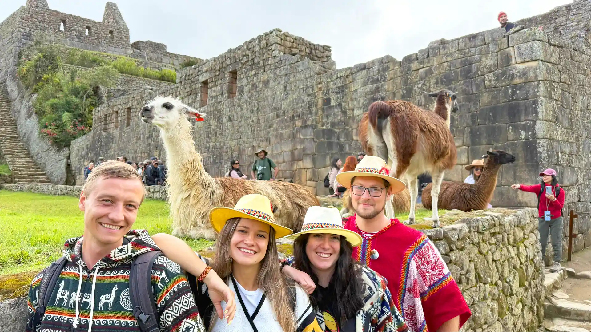

Santuario Histórico y Maravilla del Mundo
Anidada en la cima de una montaña andina y abrazada por la misteriosa selva alta, el Santuario Histórico de Machu Picchu es el destino turístico más icónico del Perú y una de las Siete Maravillas del Mundo Moderno. Esta impresionante ciudadela inca del siglo XV deslumbra por su asombrosa arquitectura de piedra, sus terrazas agrícolas que desafían la gravedad y su profunda energía mística.
Declarada Patrimonio de la Humanidad por la UNESCO, Machu Picchu es mucho más que un sitio arqueológico; es un viaje en el tiempo y un desafío a la imaginación. Ya sea llegando a pie a través del legendario Camino Inca o a bordo de un tren panorámico por el Valle Sagrado, coronar sus alturas y contemplar la emblemática postal del Huayna Picchu es una experiencia transformadora que todo viajero del mundo debe vivir al menos una vez en la vida.
Galería Visual de la Experiencia
La majestuosa vista clásica hacia el Huayna Picchu.

Recorriendo los senderos ancestrales del Camino Inca.
¿Qué Explorar en Machu Picchu?
El Templo del Sol
Única edificación semicircular construida con bloques pulidos para ceremonias y observaciones astronómicas.
El Intihuatana
La famosa "piedra donde se amarra el sol", usada por los incas para medir los solsticios y equinoccios.
Huayna Picchu
La imponente cumbre que custodia la ciudadela, con senderos empinados e impresionantes vistas panorámicas.
¿Listo para planificar tu viaje?
Reserva con anticipación tus boletos y trenes para asegurar una visita inolvidable a la maravilla inca.
Sitio Oficial de Turismo en Perú